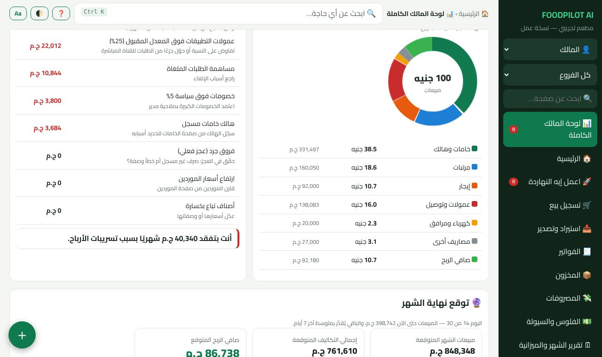
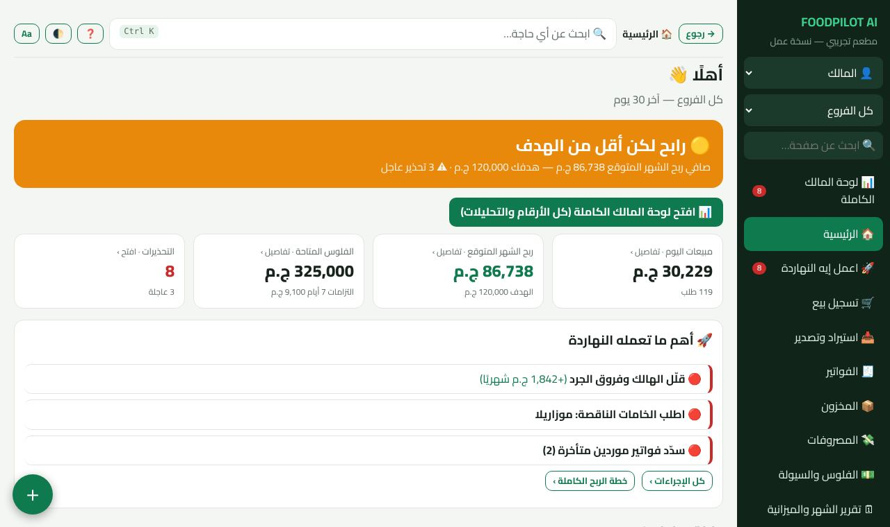
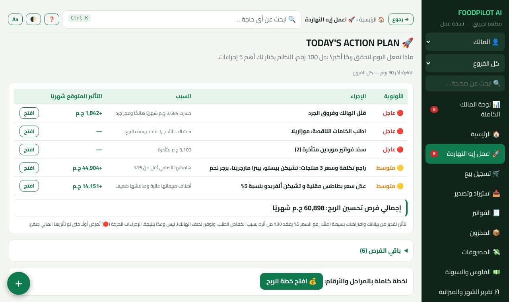
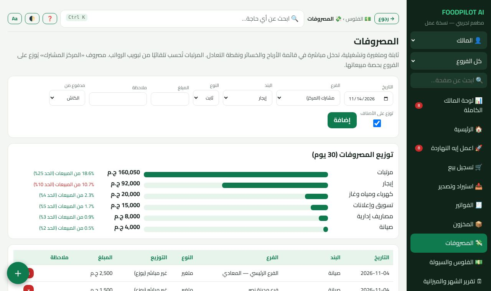
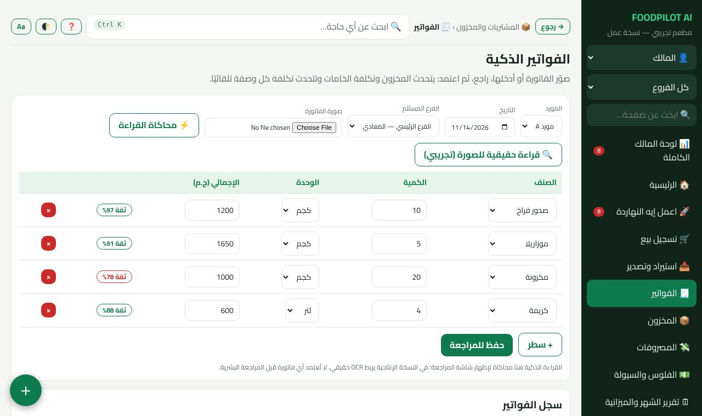
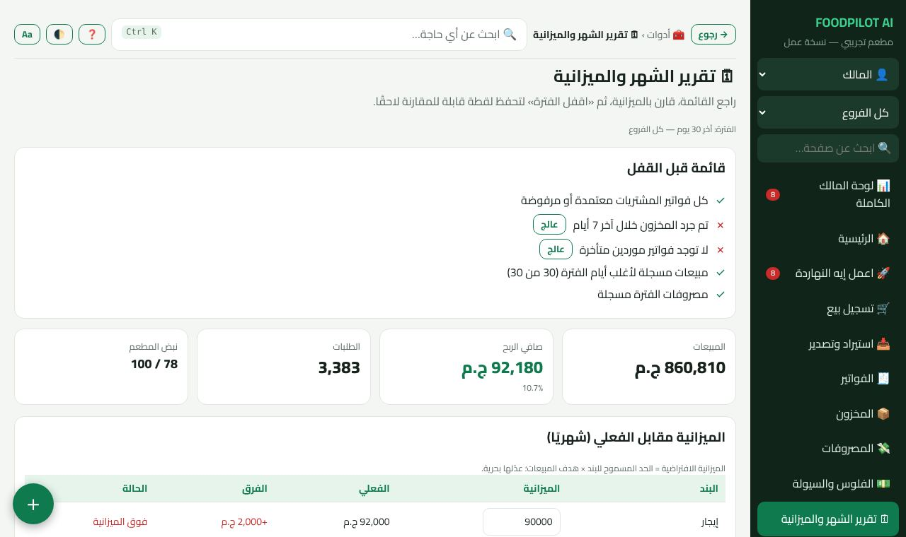
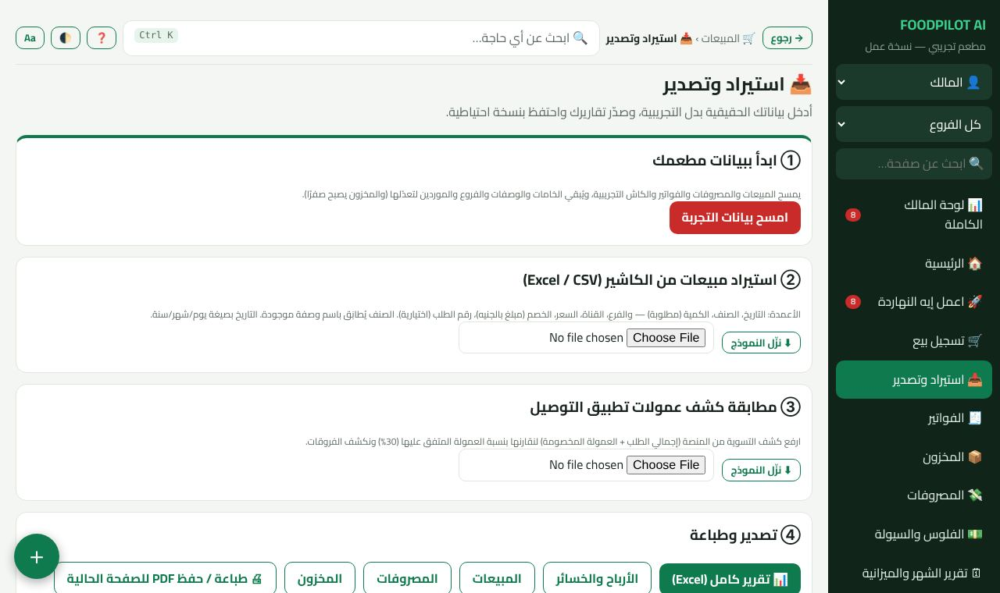
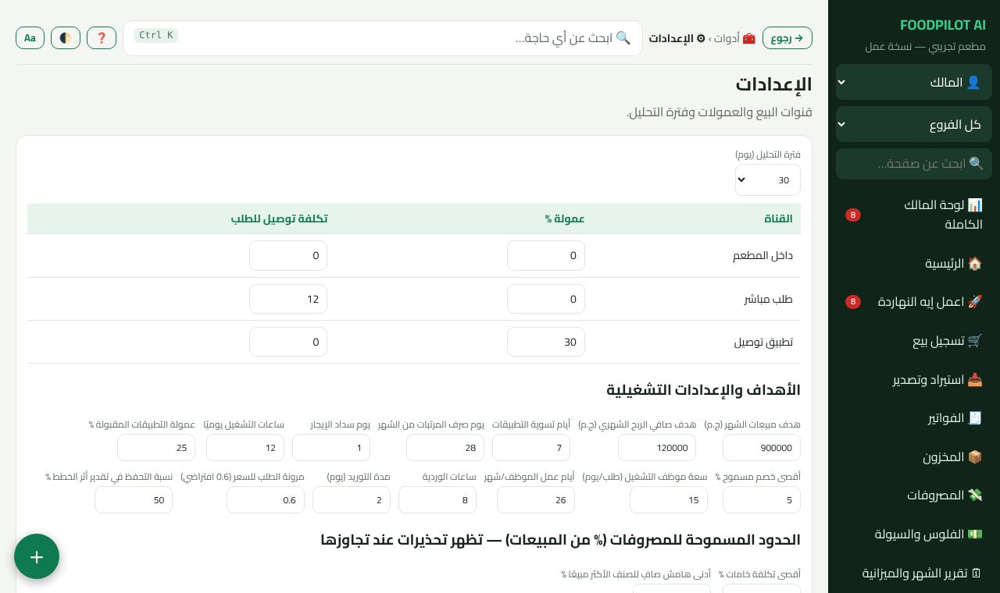

🎬 دليل استخدام FOODPILOT AI
شاهد الدورة الكاملة للنظام في 7 دقائق: من لوحة المالك إلى المبيعات والمصروفات والمخزون والفلوس وخطة الربح وقفل الشهر. الشرح مكتوب على الشاشة.
انتقل إلى فصل
نصيحة: بيانات النظام الحالية تجريبية. من «استيراد وتصدير» تقدر تمسح بيانات التجربة وتبدأ بمطعمك. اضغط ❓ في أي صفحة لشرحها، أو ابحث من الشريط العلوي (Ctrl+K).
شاشات النظام

كل أرقام مطعمك في صفحة واحدة، والأرقام قابلة للضغط.

توزيع كل 100 جنيه مبيعات + تسريب الأرباح.

الشريط الملوّن يقول هل المطعم رابح، وأزرار «عايز تعمل إيه؟».

أهم 5 إجراءات بالأولوية وأثرها بالجنيه.

تعافي لو تخسر، نمو لو رابح، مع متابعة التنفيذ.

اضغط الأصناف المباعة أو أضف مبيعات يوم كامل بالإجمالي.

سجّل كل مصروف وشوف الحد المسموح لكل بند.

قراءة الفاتورة، مراجعة، ثم اعتماد يحدّث المخزون.

رصيد كل فرع، الحد الأدنى، وطلبية الشراء التلقائية.

الكاش والبنك والمستحقات والالتزامات والمسحوبات.

أسئلة بلغتك وإجابات من أرقام مطعمك.

قائمة تحقق وميزانية ولقطة قفل الفترة.

استيراد المبيعات، مطابقة العمولات، تصدير، نسخة احتياطية.

الأهداف والحدود والأدوار وسجل التعديلات.